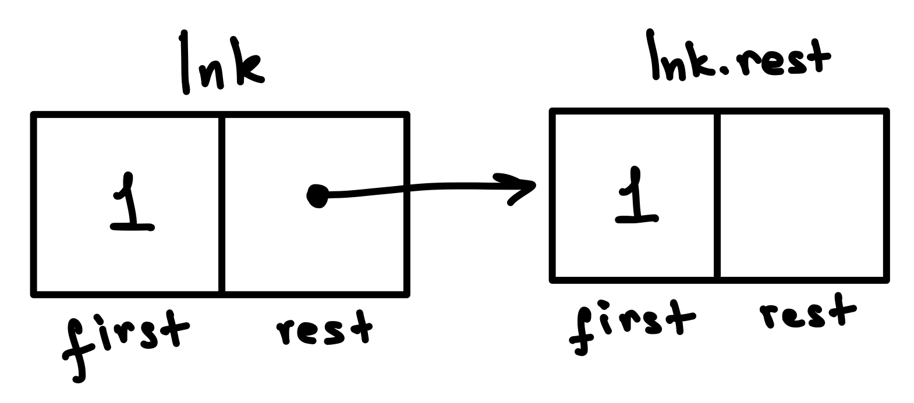
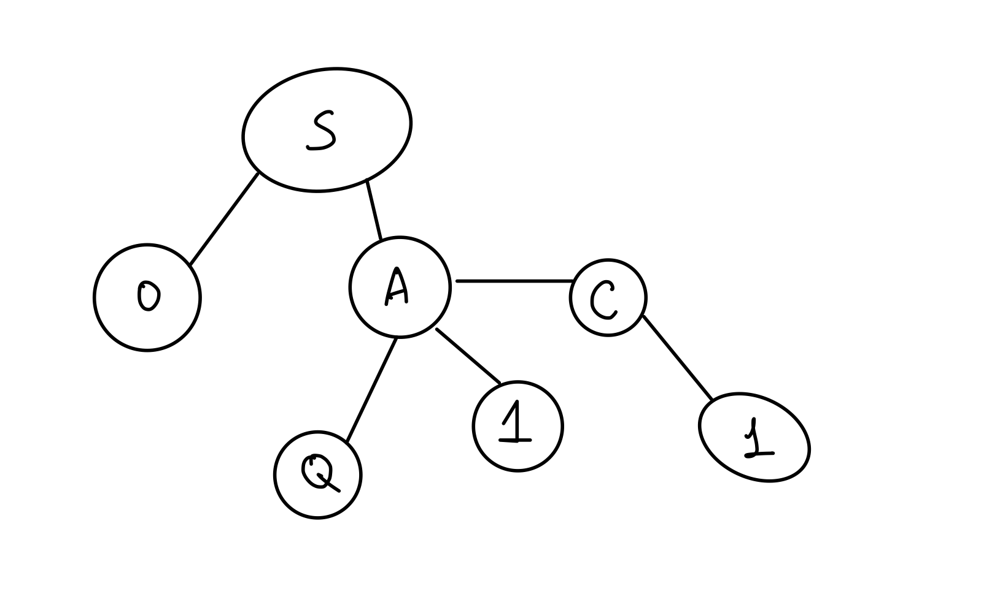

Midterm 2 Walkthrough
Tuple Trouble
Question
Consider this partially implemented two-line program:
greeting_from_staff = ("Good Luck", "You Got This", "Just Breathe")
______ = "Once More with Feeling"The full program results in this error:
AttributeError: 'tuple' object has no attribute '__setitem__'Walkthrough
To understand this question, you need to have an idea of how Python implements object attribute access and the assignment operator.
First, the error talks about a 'tuple' object. That's referring to
the greeting_from_staff variable, a 3-item tuple.
Then it says that the tuple has no attribute __setitem__.
That indicates that some code is somehow trying to access
greeting_from_staff.__setitem__ and Python cannot find
a __setitem__ attribute anywhere on the object.
So that leads us to one valid solution, a line of code that attempts to set the attribute with that name:
greeting_from_staff.__setitem__ = "Once More with Feeling"
However, this was the more common solution:
greeting_from_staff[0] = "Once More with Feeling"
That line of code does not mention __setitem__ anywhere,
but as it turns out, the Python interpreter calls __setitem__
when it sees the bracket notation being used for assignment.
The syntax tuple[0] = value is really a bit of
syntactic sugar for tuple.__setitem__(0, value).
Any index in the brackets results in the same error. In fact, any valid expression in the brackets results in that error.
There are a few other interesting valid solutions:
greeting_from_staff.__class__.__setitem__
tuple.__setitem__
Both of those call __setitem__ on the global tuple class itself,
which happens to result in the same error message.
Related Content
Teenage Mutant Ninja Lists
Question
A program starts with two list assignments:
team1 = [13, 15]
team2 = [12, 14]That code corresponds to this environment diagram:

In this question, you'll suggest ways of mutating the lists to result in different environment diagrams.
Part A
team1 = [13, 15]
team2 = [12, 14]
mega = _____________This modified program corresponds to this diagram:

Which of these could fill in the blank?
Part A Walkthrough
Here are the things that we can observe in the diagram:
- The
meganame is assigned to a list of lists. Each index (0, 1) points at another list. - The pointed lists are the same lists assigned to
team1andteam2. - The numbers only exist in the original
team1andteam2lists, they are not repeated in any new lists.
Based on those observations, we can realize that mega is a list
that consists of the team1 and team2 lists. So how can we create such a list, in code?
The most straightforward approach is this one:
[team1, team2]
That creates a list with the two elements, and each of those elements is itself a list object.
There is one additional way to make such a list:
[team1] + [team2]
When two lists are added together using the + operator, Python makes a list that consists
of the elements from the first list and then the elements of the second lists.
When you are struggling with a question like this, you can try entering all of the possible options in PythonTutor. Of course, that could take a long time, so it's nice to be able to reason about the options as well.
There was one option that resulted in a very similar diagram:
team1, team2
However, that code makes a tuple, not a list. You can see the type of the object written in the text above the boxes. In the diagram above, all of the objects are lists.
Part B
team1 = [13, 15]
team2 = [12, 14]
ultra = _____________This modified program corresponds to this diagram:

Which of these could fill in the blank?
Part B Walkthrough
Some observations on the diagram:
- The
ultraname is assigned to a list of numbers (notably not a list of lists). - The list of numbers starts with the two numbers in
team1and ends with the two numbers inteam2. - The
team1andteam2lists don't appear to be changed from the original diagram.
Based on those observations, it looks like ultra is a list constructed by copying the elements of team1
followed by copying the elements of team2.
This is the most straightforward way to do that:
team1 + team2
That looks very similar to the code from Part A, but it lacks brackets around each of the list variables, which accounts for the difference in the result. It's the same as:
[13, 15] + [12, 14]
And that results in [13, 15, 12, 14].
There are three other options that work:
team1[:] + team2[:]
team1 + team2[:]
team1[:] + team2
Those options all use slice notation to make a copy of the list(s), using [:]
to slice the entire list. The slicing isn't actually necessary in this
situation, so these options aren't as nice stylistically as the first option,
but they do produce the same result.
Part C
team1 = [13, 15]
team2 = [12, 14]
alpha = _____________This modified program corresponds to this diagram:

Which of these could fill in the blank?
Part C Walkthrough
Some observations on the diagram:
- The
alphaname is assigned to a list of two lists. - The two lists have the same values as
team1andteam2. - The
team1andteam2lists don't appear to be changed from the original diagram, and there are no new arrows pointing to them.
So we need an approach that will create a nested list where the sublists are
copes of team1 and team2.
Here are two equally clear ways of doing that:
[list(team1), list(team2)]
[team1[0:], team2[0:]]The first uses the list() constructor to make a new list,
the second uses the slicing notation to make a new list
by slicing from the 0 index to the end of the list.
Note that [0:] is the same as [:] since 0 is the default index.
Higher Order Shopping
Question
The following environment diagram was generated by a program:

Click here to open the diagram in a new window
In this series of questions, you'll fill in the blanks of the program that follows so that its execution matches the environment diagram.
def shop(groceries):
def aisle(n):
________
# (a)
________
# (b)
return aisle
def store(supplies):
def pantry(cans):
________
# (c)
________
# (d)
return pantry
shop(["pineapple", "pizza"])(3)
store(["peanut butter"])(["beans"])Walkthrough
Let's start with the aisle functions and its blanks. Some observations:
- The
aislefunction is inside theshopfunction, so it can access thegroceriesvariable in its environment. - The
shopfunction is called initially with the list["pineapple", "pizza"]which should get assigned to thegroceriesparameter. - The
grocerieslist ends up with the values["pineapple", "pizza", 3, ["pen", "pen", "pen"]] - The
storefunction does not have any way of accessing that list.
That leads to the conclusion that the code inside shop turned ["pineapple", "pizza"]
into ["pineapple", "pizza", 3, ["pen", "pen", "pen"]].
For blank (a), we can immediately eliminate a bunch of options that aren't valid Python:
nonlocal groceries += nnonlocal groceries.extend([n])nonlocal groceries.append(n)nonlocal groceries.extend(n)nonlocal groceries + n
The nonlocal keyword can only be used in front of names, not expressions or calls.
That leads us to the next question: do we need to specify nonlocal groceries or nonlocal n?
We definitely don't need nonlocal n since n is actually local inside aisle().
However, it's possible we need nonlocal groceries if we're running any code after that
reassigns groceries.
So first we need to look ahead to the options for blank (b). Only two of them
involve reassignment, the ones using the += operator.
groceries += "pen" * ngroceries += ["pen" for x in n]
Neither of those options correspond to the diagram, however. The first one would
construct the string "penpenpen" and then add each letter as a separate element.
The second one isn't valid Python syntax, since n is a number and not iterable.
All the other options use list methods that mutate the list but don't do a reassignment,
so we now know we don't need to declare nonlocal groceries.
The options for blank (a) are all about adding the value of n to the list,
so we just need to find options that will add n as an additional element at the end.
Here's the most straightforward way:
groceries.append(n)
However, there's one more option that has the same effect:
groceries.extend([n])
The remaining ones don't work:
groceries.extend(n): This results in an error, sinceextend()expects a list.groceries.append([n]): This would append a list containingn, but we just wantn.
Blank (b) must somehow add a final element to the list that is itself a list, ["pen", "pen", "pen"].
This is the only code that does that:
groceries.append(["pen"] * n)
The * operator, when operating on a list, creates a new list with the original values repeated
the number of times specified by the second operand.
Let's move on to the pantry function, starting with some observations:
- The
pantryfunction is inside thestorefunction, so it can access thesuppliesvariable in its environment. - The
storefunction is called with the list["peanut butter"]which should get assigned to thesuppliesparameter. - The returned
pantryfunction is called with the list["beans"], which should get assigned to thecansparameter. - The
supplieslist ends up with the values["peanut butter", "beans"] - The
canslist remains as["beans"].
So it seems like the blanks are somehow mutating ["peanut butter"] into
["peanut butter", "beans"].
We can start off by eliminating the syntactically incorrect options:
nonlocal supplies = list(cans)nonlocal supplies = list()nonlocal list suppliesnonlocal(supplies)
The remaining options include these assignments:
supplies = list(supplies)supplies = supplies[:]
However, those would result in an error, since supplies is defined in the parent frame,
and we can only reassign to a name in the parent frame if we have declared it with nonlocal.
The remaining options are all nonlocal statements. If we look ahead to the options
for the next blank, we see that every single option involves the supplies variable,
so that means this first blank will be nonlocal supplies.
For the next blank, we start by eliminating the syntactically incorrect options:
nonlocal supplies += cansnonlocal supplies.append(cans)nonlocal supplies[:] = cansnonlocal supplies = cansnonlocal supplies.extend([cans])
We can also eliminate the two options that completely replace the contents of the list:
supplies[:] = canssupplies = cans
These next options also don't quite do what we want (and also would not require nonlocal)
supplies.append(cans): This results in["pineapple", ["beans"]]supplies.extend([cans]): Ditto!
That leaves the correct option:
supplies += cans
That line of code adds the elements of cans to the end of supplies, resulting
in the desired list. It also requires nonlocal since it uses the += operator,
an operation which involves reassignment.
We could have instead used supplies.extend(cans) and avoided the need for nonlocal alltogether,
but that wasn't an option here. It's an option for your own programs, however!
Gotta Keep 'Em Separated
Question
Implement separate(), a function that accepts two parameters (separator and lnk) and returns a new linked
list where any two consecutive repeated numbers in lnk are separated by a link with the value of separator.
All values in lnk will be numbers.
The function should assume the standard CS61A Link definition, viewable here: code.cs61a.org/link_class
def separate(separator, lnk):
"""Returns a new linked list (using Link) that separates
any two consecutive repeated numbers in non-empty LNK
by inserting a Link with the value of SEPARATOR.
All values in LNK will be numbers.
# Case 1: Separates list that starts with pair
>>> separate(999, Link(1, Link(1)))
Link(1, Link(999, Link(1)))
# Case 2: Separates list with overlapping pairs
>>> separate(999, Link(1, Link(1, Link(1))))
Link(1, Link(999, Link(1, Link(999, Link(1)))))
# Case 3: Doesn't mutate the input list
>>> link = Link(1, Link(1))
>>> separate(999, link)
Link(1, Link(999, Link(1)))
>>> link
Link(1, Link(1))
# Case 4: Only separates pairs, not non-pairs
>>> separate(-999, Link(2, Link(2, Link(4, Link(5)))))
Link(2, Link(-999, Link(2, Link(4, Link(5)))))
# Case 5: Separates pairs at end of list
>>> separate(-1, Link(2, Link(3, Link(4, Link(4)))))
Link(2, Link(3, Link(4, Link(-1, Link(4)))))
# Case 6: Returns same-valued list if no pairs found
>>> separate(999, Link(1, Link(2)))
Link(1, Link(2))
# Case 7: Handles single element lists correctly
>>> lnk = Link(1)
>>> lnk2 = separate(999, lnk)
>>> lnk
Link(1)
>>> lnk is not lnk2
True
"""Here’s an approximate structure of a recursive solution, if that helps guide your implementation. It does not reflect the exact number of lines or indentation. Your solution must use a recursive approach, not an iterative approach. An iterative approach will receive 0 points.
if ______:
_____________
elif ____:
_____________
elif ____:
_____________
_______________Walkthrough
First of all, let's try to rephrase the prompt in our own words: "each time we see two equal values, we should put separator value between them".
Now, let's examine each doctest and take a note of what we learn from it:
# Case 1: Separates list that starts with pair
>>> separate(999, Link(1, Link(1)))
Link(1, Link(999, Link(1)))This one is quite straightforward. We put 999 in-between because there are two consecutive 1-s.
# Case 2: Separates list with overlapping pairs
>>> separate(999, Link(1, Link(1, Link(1))))
Link(1, Link(999, Link(1, Link(999, Link(1)))))Okay, so when there are multiple consecutive values, we put separator between each pair.
# Case 3: Doesn't mutate the input list
>>> link = Link(1, Link(1))
>>> separate(999, link)
Link(1, Link(999, Link(1)))
>>> link
Link(1, Link(1))This one is pretty important. separate should return a new linked list and does not mutate the original one.
# Case 4: Only separates pairs, not non-pairs
>>> separate(-999, Link(2, Link(2, Link(4, Link(5)))))
Link(2, Link(-999, Link(2, Link(4, Link(5)))))Non-equal consecutive elements should remain the same, but we still return a new linked list.
# Case 5: Separates pairs at end of list
>>> separate(-1, Link(2, Link(3, Link(4, Link(4)))))
Link(2, Link(3, Link(4, Link(-1, Link(4)))))Perhaps we should handle the case somehow differently when we separate the pair at the very end of the linked list.
# Case 6: Returns same-valued list if no pairs found
>>> separate(999, Link(1, Link(2)))
Link(1, Link(2))If there are no pairs, we simply return a new linked list with the same elements.
# Case 7: Handles single element lists correctly
>>> lnk = Link(1)
>>> lnk2 = separate(999, lnk)
>>> lnk
Link(1)
>>> lnk is not lnk2
TrueIf there is one element (i.e. no possible pairs), we also return a new linked list with only this element.
Let's make a summary. Alongside with "each time we see two equal values, we should put separator value between them", we've learned that:
1) we return a new linked list and do not modify the original one. (Case #3)
Takeaway: somewhere in our code, we will call Link() constructor and will never perform an assignment with our argument, like link.rest = ...
2) if we meet more than 2 equal elements consecutively, work with each pair separately (Case #1,2)
Takeaway: after we put separator, we should not jump over two elements, because there might be another element right after with the same value
3) the end of the linked list should also be changed (Case #5)
Takeaway: be prepared that after putting separator between a pair, the next element might be Link.empty
4) everything else in the list should be simply copied to a new linked list (Case #4,6,7)
We will refer to this list whenever we write some code to check if it meets our correctness requirements.
Since we are working with linked lists, we know we can only access the current element (link.first) and the remaining elements in the form of a linked list (link.rest).
Let's try writing some code!
First draft
The first question that comes to mind is: "how do we know that there is a pair of equal elements?". A good way to express that might be:
if lnk.first == lnk.rest.first:
# put separatorThis diagram might help to understand why we do lnk.first == lnk.rest.first:

We should create a link with separator value, which should come after link with value lnk.first, but should be followed by lnk.rest link.
Link(separator, lnk.rest)This handles the latter part of the statement above. What about preceding it with lnk.first?
We can just create a new link with the value lnk.first and specify the rest as the linked list that starts with the separator.
Link(lnk.first, Link(separator, lnk.rest))It might look like we are done here. But what about the rest (pun intended) of the linked list? At this point, our code would only work for the first two links of the list, and only if they are equal.
We would like to continue putting separator between any remaining pairs in the linked list (lnk.rest). Do we have a function for that? Yes! It is separate(), which means we need a recursive call.
Link(lnk.first, Link(separator, separate(separator, lnk.rest)))Observe that we preserve the separator value, but pass the rest of current linked list to the recursive call of separate(), since we already have dealt with the current element.
To sum up, if we had our base cases handled, this would be a valid logic:
if lnk.first == lnk.rest.first:
return Link(lnk.first, Link(separator, separate(separator, lnk.rest)))Almost there, but we need base cases
Speaking of base cases, what will we do if the lnk.rest is Link.empty? It would mean that our linked list has only one link. According to Case #7,
all we do is just return a new link with that value, because there is nothing to separate. The code would be something like this:
if lnk.rest is Link.empty:
return Link(lnk.first) # by default, the rest argument will be Link.emptyCombining the two above, our overall code looks like:
if lnk.rest is Link.empty:
return Link(lnk.first)
if lnk.first == lnk.rest.first:
return Link(lnk.first, Link(separator, separate(separator, lnk.rest)))Looks pretty good. Wait, but what if we do not enter any of the if-statements? According to our takeaways, we should still create a new linked list with the contents of the original one.
return Link(lnk.first, lnk.rest)You might have already caught an error you have seen before. We still should separate the rest of the list (by calling separate() on lnk.rest). So it should be:
return Link(lnk.first, separate(separator, lnk.rest))We did it!
The final solution would be:
if lnk.rest is Link.empty:
return Link(lnk.first)
if lnk.first == lnk.rest.first:
return Link(lnk.first, Link(separator, separate(separator, lnk.rest)))
return Link(lnk.first, separate(separator, lnk.rest))Oh, we can also see that it almost perfectly suits the structure provided to us! :)
P.S. In the solution PDF, there is another base case, at the very top:
if lnk is Link.empty:
return Link.emptySince the docstring specifies that the linked lists are "non-empty" and none of the doctests pass in an empty Link, this base case is not strictly required. However, it is generally a good practice to have this check whenever you are working with linked lists.
Related Content
- Lecture 19: Recursive Objects, Slides 13+: This is where we introduced the Link class.
Online Classes
Question
This question is inspired by online education websites that offer a range of materials such as videos, articles, exercises, and quizzes.
We will represent two kinds of educational content as a Python class:
Video and Exercise. Each of those classes inherits from the base class LearnableContent.
The partially implemented classes are shown below. You'll fill out the class definitions using inheritance and attributes. Always use the definition from the base class if it's reasonable to do so.
class LearnableContent:
"""A base class for specific kinds of learnable content.
All kinds have title and author attributes,
but each kind may have additional attributes.
"""
def __init__(self, title, author):
self.title = title
self.author = author
def __str__(self):
return f"{self.title} by {self.author}"
class Exercise(LearnableContent):
"""
>>> lambda_calc = Exercise("Lambda Calculus", "Rosie F", 5)
>>> lambda_calc.title
'Lambda Calculus'
>>> lambda_calc.author
'Rosie F'
>>> lambda_calc.num_questions
5
>>> str(lambda_calc)
'Lambda Calculus by Rosie F'
"""
def __init__(self, title, author, num_questions):
________________________
# (a)
________________________
# (b)
class Video(LearnableContent):
"""
>>> vid = Video("The Golden Ratio", "Sal Khan", 881)
>>> Video.license
'CC-BY-NC-SA'
>>> vid.title
'The Golden Ratio'
>>> vid.author
'Sal Khan'
>>> vid.num_seconds
881
>>> str(vid)
'The Golden Ratio by Sal Khan (881 seconds)'
"""
____________________
# (c)
def __init__(self, title, author, num_seconds):
________________________
# (d)
________________________
# (e)
def __str__(self):
________________________
# (f)What line of code could go in blank (a)?
What line of code could go in blank (b)?
What line of code could go in blank (c)?
What line of code could go in blank (d)?
What line of code could go in blank (e)?
What line of code could go in blank (f)? You may use any form of string formatting that you are comfortable with,
but your solution must use super().
Walkthrough
In this question, we're implementing two subclasses that inherit from a base class.
The LearnableContent class stores two instance variables, title and author, and
it returns a string representation of the title and author when __str__ is called.
The first class that we implement is the Exercise subclass. There are two indications
that Exercise instances must store an additional instance variable. First, the doctest
shows that lambda_calc.num_questions stores 5:
>>> lambda_calc.num_questions
5Second, the __init__ method takes a fourth parameter, num_questions:
def __init__(self, title, author, num_questions):
So here's our plan: we can use LearnableContent.__init__ to store the
title and author parameters, and then add one more line of code
to store the instance variable that's unique to the subclass, num_questions.
super().__init__(title, author)
self.num_questions = num_questionsWe could technically write those lines in any order, but it's generally
better style to call super() first, unless we have a strong reason to call it last.
Next up is the Video subclass. There are two indications that it also
stores a class variable. First this doctests shows that Video.license stores a string:
>>> Video.license
'CC-BY-NC-SA'Then there's a line of code directly inside the class definition and not inside any method definition, and that's exactly where a class variable would be defined.
So we can start by defining the class variable in blank (c):
license = 'CC-BY-NC-SA'
Next up is the __init__, and we're going to write code similar to what we wrote for Exercise,
since there are the same two clues that Video stores an additional instance variable.
The only difference is that the additional variable is called num_seconds, not num_questions.
super().__init__(title, author)
self.num_seconds = num_secondsFinally, we need to implement Video.__str__. According to the doctests, the string
representation of Exercise is very similar to the string representation of Video:
>>> str(lambda_calc)
'Lambda Calculus by Rosie F'
>>> str(vid)
'The Golden Ratio by Sal Khan (881 seconds)'In fact, the first part of the string is the same: the title, followed by " by ", followed by the author. The video string just adds an additional part, the number of seconds in parentheses.
That's why the question tells us that we must use super(). The base class has already
defined a useful string representation for the title and author, so we should reuse
that in order to build the longer representation with the number of seconds.
Here's one way to implement that by calling super().__str__() and then adding
an f string for the additional part:
return super().__str__() + f" ({self.num_seconds} seconds)"
We could also incorporate our call to super().__str__ inside the f string:
return f"{super().__str__()} ({self.num_seconds} seconds)"
Other string formatting methods are also valid, like .format() and +,
but f strings are generally cleaner and clearer.
Related Content
- Lecture 17: Inheritance + Composition
- Ants project: Many of the problems involved inheritance.
- Discussion 6: Inheritance: The
CatandNoisyCatproblems are very similar. - Lecture 18: Special Object Methods, Slides 12-15: This is where we first discussed
__str__. - Lecture 22: Generics, Slides 3-6: This is where we introduced f strings and reviewed other string formatting methods.
- Discussion 7: Representation Explanation
- Discussion 7: Repr-esentation WWPD
The Tree of L-I-F-E
Question
Implement word_finder, a generator function that yields each word that can be formed by following a path in
a tree from the root to a leaf, where the words are specified in a list.
When given the tree shown in the diagram below and a word list that includes ‘SO’ and ‘SAW’, the function
should first yield ‘SO’ and then yield ‘SAW’.

def word_finder(letter_tree, words_list):
""" Generates each word that can be formed by following a path
in TREE_OF_LETTERS from the root to a leaf,
where WORDS_LIST is a list of allowed words (with no duplicates).
# Case 1: 2 words found
>>> words = ['SO', 'SAT', 'SAME', 'SAW', 'SOW']
>>> t = Tree("S", [Tree("O"), Tree("A", [Tree("Q"), Tree("W")]), Tree("C", [Tree("H")])])
>>> gen = word_finder(t, words)
>>> next(gen)
'SO'
>>> next(gen)
'SAW'
>>> list(word_finder(t, words))
['SO', 'SAW']
# Case 2: No words found
>>> t = Tree("S", [Tree("I"), Tree("A", [Tree("Q"), Tree("E")]), Tree("C", [Tree("H")])])
>>> list(word_finder(t, words))
[]
# Case 3: Same word twice
>>> t = Tree("S", [Tree("O"), Tree("O")] )
>>> list(word_finder(t, words))
['SO', 'SO']
# Case 4: Words that start the same
>>> words = ['TAB', 'TAR', 'BAT', 'BAR', 'RAT']
>>> t = Tree("T", [Tree("A", [Tree("R"), Tree("B")])])
>>> list(word_finder(t, words))
['TAR', 'TAB']
# Case 5: Single letter words
>>> words = ['A', 'AN', 'AH']
>>> t = Tree("A")
>>> list(word_finder(t, words))
['A']
# Case 6: Words end in leaf
>>> words = ['A', 'AN', 'AH']
>>> t = Tree("A", [Tree("H"), Tree("N")])
>>> list(word_finder(t, words))
['AH', 'AN']
# Case 7: Words start at root
>>> words = ['GO', 'BEARS', 'GOB', 'EARS']
>>> t = Tree("B", [Tree("E", [Tree("A", [Tree("R", [Tree("S")])])])])
>>> list(word_finder(t, words))
['BEARS']
# Case 8: This special test ensures that your solution does *not*
# pre-compute all the words before yielding the first one.
# If done correctly, your solution should error only when it
# tries to find the second word in this tree.
>>> words = ['SO', 'SAM', 'SAT', 'SAME', 'SAW', 'SOW']
>>> t = Tree("S", [Tree("O"), Tree("A", [Tree("Q"), Tree(1)]), Tree("C", [Tree(1)])])
>>> gen = word_finder(t, words)
>>> next(gen)
'SO'
>>> try:
... next(gen)
... except TypeError:
... print("Got a TypeError!")
... else:
... print("Expected a TypeError!")
Got a TypeError!
"""Please read through the function header and doctests below. We have provided quite a few doctests to test
different situations and demonstrate how the function should work. You can always call draw(t) on a particular
tree object on code.cs61a.org to help you visualize its structure and understand the results of a doctest.
Here is a skeleton of a correct solution:
def word_finder(letter_tree, words_list):
def _________(____):
_______________ # Optional
if ____________:
yield ______________
for ___________:
yield from _________
yield from __________We highly encourage you to follow the skeleton. You may diverge from the skeleton if your approach is correct and passes the doctests, but a non-working solution that doesn’t follow the skeleton will not receive partial credit.
A correct solution should not first find all the words and then yield them; it should instead yield whenever it finds a new word. Your solution may receive 0 points if it pre-computes the words.
Your function should use the standard CS61A Tree definition, viewable here: code.cs61a.org/tree_class
Walkthrough
I have heard once that if you don't know how to start a problem, start by rewriting its statement. So here's one way we might rewrite it:
- We should return a generator, so perhaps we will not have any
returnstatements in our solution - A valid word can be formed only by starting at the root node and ending at the leaf. Probably when I check the condition
t.is_leaf()somewhere in code, I will already have a valid word - Each time we have a word (or in other words, stumble upon a leaf), we check if it exists in the
words_list. If yes, we yield it. If not, we seem to not do anything.
Let's walk through the doctests to verify/extend our understanding of the problem:
# Case 1: 2 words found
>>> words = ['SO', 'SAT', 'SAME', 'SAW', 'SOW']
>>> t = Tree("S", [Tree("O"), Tree("A", [Tree("Q"), Tree("W")]), Tree("C", [Tree("H")])])
>>> gen = word_finder(t, words)
>>> next(gen)
'SO'
>>> next(gen)
'SAW'
>>> list(word_finder(t, words))
['SO', 'SAW']Looking at the diagram, we see that SO and SAW are indeed the words that both "end" at the leaf, hence they are valid.
They are also in our words_list argument, so our generator should yield them.
# Case 2: No words found
>>> t = Tree("S", [Tree("I"), Tree("A", [Tree("Q"), Tree("E")]), Tree("C", [Tree("H")])])
>>> list(word_finder(t, words))
[]If there are no words, we do nothing, which is equivalent to not yielding anything.
# Case 3: Same word twice
>>> t = Tree("S", [Tree("O"), Tree("O")] )
>>> list(word_finder(t, words))
['SO', 'SO']Interesting, if we can build the same word twice using different paths, we yield that word twice.
# Case 4: Words that start the same
>>> words = ['TAB', 'TAR', 'BAT', 'BAR', 'RAT']
>>> t = Tree("T", [Tree("A", [Tree("R"), Tree("B")])])
>>> list(word_finder(t, words))
['TAR', 'TAB']I think this test just highlights the fact that we should check all possible ways to get to the leaves. Nothing too special.
# Case 5: Single letter words
>>> words = ['A', 'AN', 'AH']
>>> t = Tree("A")
>>> list(word_finder(t, words))
['A']If the root is the only node in the tree, then it is also a leaf. A good candidate for a base case.
# Case 6: Words end in leaf
>>> words = ['A', 'AN', 'AH']
>>> t = Tree("A", [Tree("H"), Tree("N")])
>>> list(word_finder(t, words))
['AH', 'AN']Another test to highlight that we should only consider words that end in a leaf, so 'A' isn't a valid word here (because that would require ending the word before we got to a leaf)
# Case 7: Words start at root
>>> words = ['GO', 'BEARS', 'GOB', 'EARS']
>>> t = Tree("B", [Tree("E", [Tree("A", [Tree("R", [Tree("S")])])])])
>>> list(word_finder(t, words))
['BEARS']Since we have to start from the root, only "BEARS" is a valid word. "EARS" is unfortunately not.
# Case 8: This special test ensures that your solution does *not*
# pre-compute all the words before yielding the first one.
# If done correctly, your solution should error only when it
# tries to find the second word in this tree.
>>> words = ['SO', 'SAM', 'SAT', 'SAME', 'SAW', 'SOW']
>>> t = Tree("S", [Tree("O"), Tree("A", [Tree("Q"), Tree(1)]), Tree("C", [Tree(1)])])
>>> gen = word_finder(t, words)
>>> next(gen)
'SO'
>>> try:
... next(gen)
... except TypeError:
... print("Got a TypeError!")
... else:
... print("Expected a TypeError!")
Got a TypeError!This one is long, but vital for our understanding of why we can't pre-compute. If we quickly draw the tree, we get something like this: 
Only 'SO' is possible to form, but why does the test expect a TypeError? If we look closely, we see that there are also numbers in the tree.
Technically, the possible paths in this tree would form the list ["SO", "SAQ", "SA1", "SAC1"]. However, the last two elements would not qualify as words, as they contain numbers.
This might be the root (pun intended) of the TypeError.
Perhaps, in a correct solution, when the code tries to add a number to a string variable, it throws an exception of TypeError, since Python doesn't allow simply adding a number to a string.
What's the difference between what a correct lazy solution would yield, versus an incorrect pre-computed solution?
A pre-computed solution would first find all of the words ["SO", "SAQ", "SA1", "SAC1"] before yielding anything and only afterwards yield the words that matched words_list.
A pre-computed solution would either immediately run into a TypeError on this tree, before yielding anything, or it would never run into a TypeError.
A correct lazy solution first yields the initial word "SO" and then, when asked to generate the next word, it runs into a TypeError.
This test suggests that the process of forming the words should happen as we yield, not strictly before.
Our research of doctests and the prompt yields these additional results:
- We can yield the same word multiple times, as long as it can be formed through multiple paths
- Single root tree = leaf, so it would form a valid word of length 1
- We can not pre-compute the words
So conceptually, we start at the root and "collect" the letters in some variable as we traverse the tree, checking the variable against the words_list as we reach each leaf.
Finally, let's start by examining the provided skeleton.
def word_finder(letter_tree, words_list):
def _________(____):
_______________ # Optional
if ____________:
yield ______________
for ___________:
yield from _________
yield from __________The first thing we can observe is that word_finder has only a HOF declaration and yield from statement. The latter only works with generator functions/iterables.
So we can either put a call to word_finder after yield from (we can't since it does not have any arguments to "collect" the letters during tree traversal) or we can call some other built-in generator/put an iterable.
Do we have a good candidate? What about our HOF? We can define it as a generator and use it with yield from! So our first attempt would look like the following:
def word_finder(letter_tree, words_list):
def some_generator(____):
_______________ # Optional
if ____________:
yield ______________
for ___________:
yield from _________
yield from some_generator(____)What about the arguments? Well, as we planned, we need some variable to "collect" the letters as we move along the tree. When we just start, we have an empty word or "". So we can try doing this:
def word_finder(letter_tree, words_list):
def some_generator(word_so_far): # the word that we've formed so far
_______________ # Optional
if ____________:
yield ______________
for ___________:
yield from _________
yield from some_generator("")We can access both the tree and words list from the outer function, so let's proceed to the body of the inner function.
No idea on what to do with the optional line, so let's skip it for now. We see an if statement right after.
It looks like a nice place to put our logic of checking whether we are at the leaf and yielding the word we've formed so far. Remember that in order to be able to yield the word,
we require it to finish at the leaf and be present in words_list. With this in mind, let's try the following:
if letter_tree.is_leaf() and word_so_far in words_list:
yield word_so_farLooks good, except the fact that letter_tree will always point to the root, since we never change it. This suggests us that our HOF should keep track of the current node,
so we introduce another variable t to make that possible.
def some_generator(t, word_so_far): # we've added `t` here to keep track of the current node
_______________ # Optional
if t.is_leaf() and word_so_far in words_list:
yield word_so_farOur last yield from would then begin at letter_tree:
yield from some_generator(letter_tree, "")So far, we have this code:
def word_finder(letter_tree, words_list):
def some_generator(t, word_so_far): # the word that we've formed so far
_______________ # Optional
if t.is_leaf() and word_so_far in words_list:
yield word_so_far
for ___________:
yield from _________
yield from some_generator(letter_tree, "")Since we traverse the tree and keep track of the current node, the next for loop suits the classic for b in t.branches. But what about the yield from?
If it makes matters simple, recall that yield from is equivalent to:
for item in ______: # some generator here
yield itemSo let's add our b in t.branches and rewrite yield from:
for b in t.branches:
for item in ______:
yield itemConceptually, we are going over each branch and in that branch, we need to create some generator from which we will yield.
b is just another tree that starts from b as a root, right? Do we have a function that given a tree would return a generator with words? Yes!
In fact we have two: both word_finder and our new-born some_generator suit that description. Which one should we pick?
Probably some_generator, since it has an argument to keep track of the word we have so far. Since we did not pass the check for leaf and now going through a for-loop,
it means we should collect the current node's letter and pass it to all our branches, in hope that one of them can form a valid word. Let's try this code then:
for b in t.branches:
for item in some_generator(b, word_so_far + t.label):
yield itemLet's have another look on our overall code:
def word_finder(letter_tree, words_list):
def some_generator(t, word_so_far):
_______________ # Optional
if t.is_leaf() and word_so_far in words_list:
yield word_so_far
for b in t.branches:
for item in some_generator(b, word_so_far + t.label): # we can replace this back with yield from, but later
yield item
yield from some_generator(letter_tree, "")Looks good, right? We start at the root from "" as our word_so_far, skip the check for leaf if we have more branches and then enter the for loop.
There, we add our current letter to "" and proceed to the next level of branches. That level will perform a check for leaf, add its letter to the word and pass it to the next level.
All of that will happen until we reach the leaf and yield that word... Wait! We do not take into account the letter at the leaf! Our if statement should look like:
if t.is_leaf() and (word_so_far + t.label) in words_list:
yield word_so_farSince we are repeating word_so_far + t.label twice, let's utilize the optional line for that and put word_so_far += t.label there. So overall:
def word_finder(letter_tree, words_list):
def some_generator(t, word_so_far):
word_so_far += t.label # utilizing optional line
if t.is_leaf() and word_so_far in words_list:
yield word_so_far
for b in t.branches:
for item in some_generator(b, word_so_far):
yield item
yield from some_generator(letter_tree, "")So our some_generator is not any random generator, but actually something that builds words. So let's honor it by giving a proper name:
def word_finder(letter_tree, words_list):
def word_builder(t, word_so_far):
word_so_far += t.label
if t.is_leaf() and word_so_far in words_list:
yield word_so_far
for b in t.branches:
for word in word_builder(b, word_so_far):
yield word
yield from word_builder(letter_tree, "")Finally, it is time to revert our for loop + yield hack back to yield from and we are done! Good job!
def word_finder(letter_tree, words_list):
def word_builder(t, word_so_far):
word_so_far += t.label
if t.is_leaf() and word_so_far in words_list:
yield word_so_far
for b in t.branches:
yield from word_builder(b, word_so_far):
yield from word_builder(letter_tree, "")Related Content
- Lecture 15: Iterators and Generators, Slides 14-21: where we learn about tree traversal generator
- Homework 4: Problem 5, Has Path: very similar problem, just without generating the words
Gas Composition
Question
This question is inspired by research projects that are tracking the emissions of greenhouse gases into the environment so that they can identify the biggest sources of greenhouse gases and find ways to sustainably reduce them.
We have written two classes to help track gas emissions: EmissionSource and EmissionsTracker.
The EmissionSource class is fully implemented. Each instance stores a name, a dictionary
of emission rates per hour per gas type, and the number of hours it's been running (initialized to 0).
Read through the implementation below:
class EmissionSource:
def __init__(self, name, co2, ch4, n2o):
self.name = name
self.emissions = {
"carbon dioxide": co2, # kg CO2/ton/hour
"methane": ch4, # g CH4/ton/hour
"nitrous oxide": n2o, # g N2O/ton/hour
}
self.hours = 0
def run_for(self, num_hours):
self.hours += num_hours
def calc_emissions(self, gas):
return self.emissions.get(gas, 0) * self.hoursThe EmissionsTracker class is partially implemented, but has doctests that demonstrate how it should work.
It's job is to track sources and calculate statistics about their emissions.
Read through the doctests, docstrings, and partial implementation below:
class EmissionsTracker:
"""
>>> tracker = EmissionsTracker()
>>> pp1 = EmissionSource("Anthracite Coal", 2602, 276, 40)
>>> pp2 = EmissionSource("Lignite Coal", 1389, 156, 23)
>>> tracker.add_sources([pp1, pp2])
>>> pp1.run_for(5)
>>> pp2.run_for(6)
# Case 1: Calculate max for 2 added so far
>>> tracker.calc_emissions("methane")
[('Anthracite Coal', 1380), ('Lignite Coal', 936)]
>>> tracker.calc_max_source("methane")
('Anthracite Coal', 1380)
# Case 3: Calculate emissions for all 3
>>> pp3 = EmissionSource("Plastics", 2850, 1216, 160)
>>> pp3.run_for(3)
>>> tracker.add_sources([pp3])
>>> tracker.calc_emissions("carbon dioxide")
[('Anthracite Coal', 13010), ('Lignite Coal', 8334), ('Plastics', 8550)]
>>> tracker.calc_emissions("methane")
[('Anthracite Coal', 1380), ('Lignite Coal', 936), ('Plastics', 3648)]
>>> tracker.calc_emissions("nitrous oxide")
[('Anthracite Coal', 200), ('Lignite Coal', 138), ('Plastics', 480)]
# Case 4: Calculate max for all 3
>>> tracker.calc_max_source("carbon dioxide")
('Anthracite Coal', 13010)
>>> tracker.calc_max_source("methane")
('Plastics', 3648)
>>> tracker.calc_max_source("nitrous oxide")
('Plastics', 480)
"""
def __init__(self):
self.sources = []
def add_sources(self, sources):
""" Adds the list of SOURCES to the end of self.sources"""
__________________________
# (a)
def calc_emissions(self, gas):
""" Returns a list of tuples where the first element is the name of
the source and the second element is the total amount of emissions
from that type of GAS."""
__________________________
# (b)
def calc_max_source(self, gas):
""" Returns a tuple where the first element is the name of the source
with the highest emissions and the second element is the total amount
of emissions from that source for that type of GAS."""
return max(______________)
# (c)The following questions will ask you to fill in the blanks for EmissionsTracker.
What line of code could go in blank (a)?
What line of code could go in blank (b)? Your code must use methods from the EmissionSource class if it's reasonable to do so.
What expression could go in blank (c)? You may want to consult the Python documentation for the max function.
Walkthrough
The EmissionTracker class is an example of composition: it creates objects that are composed of other objects, EmissionSource instances.
Each instance of EmissionTracker stores an instance variable sources, which is initialized to an empty list.
We can see from the doctests how sources are added:
>>> tracker = EmissionsTracker()
>>> pp1 = EmissionSource("Anthracite Coal", 2602, 276, 40)
>>> pp2 = EmissionSource("Lignite Coal", 1389, 156, 23)
>>> tracker.add_sources([pp1, pp2])The first thing we need to do is define add_sources, which includes a docstring that says it "adds the list of SOURCES to the end of self.sources".
There are a few ways we could add a list to another list:
- Add the list itself as an element in the list, so that the list is actually a nested list.
- Add each element in the list to the list, so that the length of the list increases by the number of elements in the added list.
We could actually implement it either way, as there's no doctest that checks whether self.sources is a 1-dimensional list
or a 2-dimensional list. However, we don't see any indication in the later doctests and methods
that self.sources is a nested list, and it's much simpler to store a 1-dimensional list, so we'll go with that approach:
self.sources.extend(sources_to_add)
We could also write it one of these ways:
self.sources += sourcesself.sources = self.sources + sources
Next up, we need to implement EmissionsTracker.calc_emissions(). There are two places we can look for
indications of how that works: the doctests and the docstring.
The relevant doctests:
>>> tracker.calc_emissions("carbon dioxide")
[('Anthracite Coal', 13010), ('Lignite Coal', 8334), ('Plastics', 8550)]
>>> tracker.calc_emissions("methane")
[('Anthracite Coal', 1380), ('Lignite Coal', 936), ('Plastics', 3648)]
>>> tracker.calc_emissions("nitrous oxide")
[('Anthracite Coal', 200), ('Lignite Coal', 138), ('Plastics', 480)]The docstring: "Returns a list of tuples where the first element is the name of the source and the second element is the total amount of emissions from that type of GAS."
There are two tricky aspects here: 1) how to create a list of tuples based on a list of objects, 2) how to calculate the emissions.
If we only needed the tuple to contain the name and hours of each source, we could write this list comprehension:
return [ (source.name, source.hours) for source in self.sources]
However, we want to calculate the gas emitted for each source, and we're encouraged to
use methods from EmissionSource when it makes sense to do so. There's a calc_emissions(gas)
on that class, and that gives us the output we want. Here's a final solution:
return [ (source.name, source.calc_emissions(gas)) for source in self.sources]
That gives us the emissions for each source for the type of gas passed in to
EmissionsTracker.calc_emissions.
Finally, we need to implement calc_max_source, a function that is partially defined for us.
The relevant doctests:
>>> tracker.calc_max_source("carbon dioxide")
('Anthracite Coal', 13010)
>>> tracker.calc_max_source("methane")
('Plastics', 3648)
>>> tracker.calc_max_source("nitrous oxide")
('Plastics', 480)The docstring: "Returns a tuple where the first element is the name of the source with the highest emissions and the second element is the total amount of emissions from that source for that type of GAS."
It sounds very similar to the docstring from the last function, except that it only wants the source with the maximum emission amount from that list of tuples.
What happens if we just pass self.calc_emissions(gas) to the max() function?
Unfortunately, that won't quite work- it results in the wrong tuple returned.
That's because Python uses its default method of comparing tuples, which involves
comparing the values of the first element in each tuple. However, we want it to compare
the second element of each tuple.
We need to use the optional key argument to tell Python how to compare each
element. That argument should be a function that receives an element and returns
some value that can be compared (like a number). In this case, the function
receives each tuple, and should return the second element of each tuple. Like so:
max(self.calc_emissions(gas), key=lambda tup: tup[1])
And then our class is complete, with all tests passing!
Alternatives
Imagine if we had stored sources as 2-dimensional list, appending a list each time:
self.sources.append(sources_to_add)
We would then need this much more complex list comprehension that iterates through all the sources
in the nested lists and flattens them into one list using sum():
def calc_emissions(self, gas):
return sum([ [(source.name, source.calc_emissions(gas)) for source in source_list] for source_list in self.sources], start=[])That is valid code and passes all the tests, but we probably would not want to do that unless we had another reason for wanting to store a nested list, like if we wanted to keep track of which sources were added together.
Related Content
- Lecture 17: Composition, Slides 28-35: This is where we first introduced composition.
- Lecture 18: Special Object Methods, Slides 2-6: We revisited composition again in the lecture after.
- Lecture 23: Fun with Iterables, Slide 10: We showed how to use key functions.
- Ants project: We used composition in this project quite a bit, since every Place contained an Ant and multiple Bee(s).
Business as Usual
Question
Modern office supplies companies use software to track their sales inventory and can use object oriented programming to represent the types of products they sell.
We will represent one type of product as a Python class: PaperReam.
The class is partially implemented below. Please read through the code and doctests.
class PaperReam:
"""
>>> ream = PaperReam("red", 200)
>>> ream.color_name
'red'
>>> ream.num_sheets
200
>>> ream
PaperReam('red', 200)
"""
def __init__(self, color_name, num_sheets):
self.color_name = color_name
self.num_sheets = num_sheets
____________________
# (a)
________________
# (b)The following questions will ask you to fill in the blanks
for PaperReam.
What line of code could go in blank (a)?
What line of code could go in blank (b)?
Walkthrough
The question claims that the class is partially implemented, yet the doctests seem straightforward. However, if we actually run the doctests with the partial code in code.cs61a.org, we will see an error:
Failed example:
>>> ream
Expected:
PaperReam('red', 200)
Received:
__main__.PaperReam objectThe reported failure is with the very last test, which checks the output when typing the object name in the interpreter. The test runner gets the following output:
__main__.PaperReam objectThat is the standard output when we ask the Python interpreter to display
an instance of a user-defined class, either by typing it in a shell or calling repr() on it.
It will always look something like __module__.UserClass object.
If we want Python to represent the object differently, we have to explicitly
tell it how. We can do that by overriding the __repr__ method in the class definition.
So the first thing we do is add the function header:
def __repr__(self):
The method takes a single parameter, self, and must return a string with
the desired representation. Typically we try to return a string that
looks like the object constructor, such that we could paste that output
into Python and re-construct a same-valued object. That's why the doctest
is looking for PaperReam('red', 200).
Here's one way to return such a string:
return f"PaperReam('{self.color_name}', {self.num_sheets})"
That uses an f string to format a string that has the class name, parentheses, the color name (in quotes, since it's a string), and the number of sheets (with no quotes, since it's a number).
It's also possible to use other string formatting methods, like +
or .format(), but f strings are generally the cleanest and clearest.
An even nicer approach is to use repr() on each instance attribute:
return f"PaperReam({repr(self.color_name)}, {repr(self.num_sheets)})"
With this approach, we don't need to worry about whether an attribute
is a string, a number, or even a complex type like a list. We instead
rely on the __repr__ of each type to return with the appropriate
representation.
Common mistakes
Many students defined the __str__ method instead. That method is called
by Python when we call str() or print() on an object, but it is not called
when we simply write the name of an object in the Python shell.
In those situations, if __str__ is not defined, Python will call __repr__ instead.
However, it doesn't go the other way: if __str__ is defined but not __repr__,
Python will not call __str__ when we call repr() on an object. That's why
it's generally better to start off by defining __repr__ in a user defined class,
and then define __str__ after if needed.
Here's a diagram that visually shows the relationship:

Related Content
- Lecture 18: Special Object Methods, Slides 14-16: This is where we first discussed
__repr__. - Lecture 22: Generics, Slides 3-6: This is where we introduced f strings and reviewed other string formatting methods.
- Discussion 7: Repr-esentation WWPD
Light It Up
Question
An individually addressed LED light strip allows programmers to write programs to change the color of each individual LED light.
We could represent a strip of lights using a SingleLED class and an LEDLightStrip class:
class SingleLED:
def __init__(self, brightness, color):
self.brightness = brightness
self.color = color
class LEDLightStrip:
def __init__(self, leds):
self.leds = leds
self.length = len(leds)
self.is_on = False
def toggle(self):
self.is_on = not self.is_onThen a short 3-light strip could be constructed like so:
light_strip = LEDLightStrip([SingleLED(0, "blue"), SingleLED(0, "red"), SingleLED(0, "green")])We would like to be able to iterate through the light object, one light at a time, like so:
for led in light_strip:
led.brightness += 20But with our current code, we see this error:
TypeError: 'LEDLightStrip' object is not iterable
We need to define a new method on LEDLightStrip to make it iterable. Here's a skeleton of that method:
def ______________(self):
# (a)
______________
______________
# (b)What method name should go in blank (a)?
What code could go in blank (b) such that the for loop works? You can use a single line of code or multiple lines of code, as long as the code is correct.
Walkthrough
This question is asking us to make a custom object iterable.
Python has many buit-in iterable objects: list, str, tuple, dict, range, set.
That means we can iterate through instances of those type in a for loop.
However, an instance of a custom class is not iterable by default, which means Python has no idea how to iterate through it with a for loop and outputs the error shown above.
What makes an object iterable? Its class must define the __iter__ method.
The built-in iterables all define __iter__, but LEDLightStrip doesn't,
and it doesn't inherit an __iter__ from its implicit base class object.
So the first thing we do is add a function header for the method (blank a):
def __iter__(self):
The method takes no additional arguments besides self.
Python expects __iter__
to return an iterator object, and an iterator object is any object on which we can call next().
(If you're getting muddled between iterables and iterators, this diagram from Lecture 23 may help.)
{kind=link}
One way to make an iterator is to write a generator function, since a generator is a type of iterator.
A generator is a function that uses yield instead of return, yielding a value everytime next() is called on it.
Here's one way to implement a generator that yields each light in the light strip:
for led in self.leds:
yield ledA while loop can also be used, but the above for loop is cleaner and shorter than the while.
An even shorter version of that approach uses the yield from shorthand:
yield from(self.leds)Another way to make an iterator is to call iter() on an iterable
and return the result:
return iter(self.leds)All of these solutions return an iterator that will yield each light,
one at a time, and raise StopIteration when there are no more left.
Related Content
- Lecture 23: Fun with Iterables, especially the Icon example at the end.
May I Take Your Order?
Question
The following two functions can be used for inserting items into a linked list.
The first function insert_front() always inserts at the front of the list
while the second function insert_back() always inserts at the back of the list.
Both functions use the standard CS61A Link definition, viewable here:
code.cs61a.org/link_class
def insert_front(link, new_val):
"""Add NEW_VAL to the front of non-empty LINK, mutating the list.
>>> link = Link(-1, Link(-3, Link(-5)))
>>> insert_front(link, -0)
>>> link
Link(-0, Link(-1, Link(-3, Link(-5))))
>>> insert_front(link, -3)
>>> link
Link(-3, Link(-0, Link(-1, Link(-3, Link(-5)))))
"""
original_first = link.first
link.first = new_val
link.rest = Link(original_first, link.rest)
def insert_back(link, new_val):
"""Add NEW_VAL to the end of non-empty LINK, mutating the list.
>>> link = Link(-1, Link(-3, Link(-5)))
>>> insert_back(link, -0)
>>> link
Link(-1, Link(-3, Link(-5, Link(-0))))
>>> insert_back(link, -3)
>>> link
Link(-1, Link(-3, Link(-5, Link(-0, Link(-3)))))
"""
while link.rest is not Link.empty:
link = link.rest
link.rest = Link(new_val)What is the order of growth of insert_front() as the input list size changes?
What is the order of growth of insert_back() as the input list size changes?
Which of the following correctly describes the two functions?
Walkthrough
The order of growth of a function describes the number of operations performed as its input increases in size and approaches very large numbers (infinity).
Let's consider how many operations are required by insert_front() for a
linked list of size 1:
link = Link(1)
insert_front(link, Link(0))The function would execute the following operations just once:
original_first = link.first
link.first = new_val
link.rest = Link(original_first, link.rest)And result in this linked list:
Link(0, Link(1))
What about a linked list of size 5?
link = Link(1, Link(2, Link(3, Link(4, Link(5)))))
insert_front(link, Link(0))It would still execute the same number of operations, just these three:
original_first = link.first
link.first = new_val
link.rest = Link(original_first, link.rest)And result in this linked list:
Link(0, Link(1, Link(2, Link(3, Link(4, Link(5))))))
In fact, no matter the length of the input linked list, this function will always require only 3 operations to insert a value at the front. That's because the function never needs to look beyond the very first link in the list, so it's not affected by how many links come after.
Here's what that looks like as a graph:

As n increases, where n represents the length of the input list,
the graph remains the same. That is called constant growth,
and corresponds to Θ(1) in Big Theta notation.
Why is it Θ(1) and not Θ(3)? Well, in this notation, we don't care about constant multipliers and we just drop them, for simplicity. So if the function always grows at Θ(1 * constant), where constant is some integer, then we simplify to Θ(1). The constant multiplier might matter in some practical situations, but it's not as useful in describing the way in which a function grows. What's much more important is knowing whether a function is Θ(1), Θ(n) Θ(2^n), etc.
That brings us to the next function, insert_back().
Let's consider how many operations are required by insert_back() for a
linked list of size 1:
link = Link(1)
insert_back(link, Link(0))The while loop condition would be false, so the function would immediately execute the following operation:
link.rest = Link(new_val)And result in:
Link(1, Link(0))
What about the linked list of size 5?
link = Link(1, Link(2, Link(3, Link(4, Link(5)))))
insert_back(link, Link(0))That would execute the while loop operation 4 times:
while link.rest is not Link.empty:
link = link.restThen the final operation 1 time:
link.rest = Link(new_val)Thus resulting in:
Link(1, Link(2, Link(3, Link(4, Link(5, Link(0))))))So, for a linked list of size 1, there was 1 check of the loop condition and 1 final operation, and for a linked list of size 5, there were 5 checks of the loop condition, 4 operations inside, and 1 final operation. The while loop is responsible for the difference between the two functions, since it has to be checked for every element in the list, until it gets to the final link.
If the list was 1000 items long, there'd be 1000 checks of the loop condition and 999 operations inside. The number of checks increases as the input list size increases.
Here's what that looks like as a graph:

As n increases, where n represents the length of the input list,
the graph increases steadily. That is called linear growth,
and corresponds to Θ(n) in Big Theta notation.
In this case, the actual number of operations is more like (2n + 1), to account for the operation inside the while loop. However, once again, when expressing orders of growth in Big Theta notation, we simplify the function by dropping constants and lower orders.
The final question for this problem asked for a description of the two functions. The correct answer is: "Both functions perform destructive operations on the input parameter, a mutable object."
The operations are destructive because they change the input list.
Here are the destructive operations from insert_front():
link.first = new_val
link.rest = Link(original_first, link.rest)And the destructive operation from insert_front():
link.rest = Link(new_val)They were only able to change the input list size because the Link object is mutable,
meaning that its contents can be changed over the course of computation.
It would be possible, by the way, to write non-destructive versions of the methods that returned entirely new Link objects. They would not necessarily have the same orders of growth, however. Try it out!
Related Content
- Lecture 13: Mutable Values, Slides 10+: This discusses destructive/non-destructive and mutable/immutable.
- Study Guide: Orders of Growth
- Discussion 7: Efficiency: Some practice problems on orders of growth.
- Lecture 19: Recursive Objects, Slides 13+: This is where we introduced the Link class.